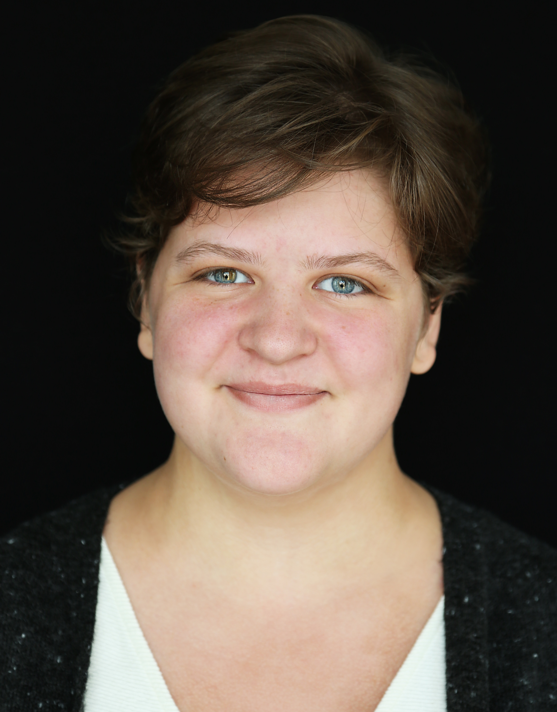

-

I was born in the heart of America, so I learned to wear mine on my sleeve.
I'm lucky enough to hail from Kansas City, Mo., two hours from the world's first and best journalism school. I've been able to hone my craft at the University of Missouri while pursuing a Bachelor's in journalism. I'm focusing on photo editing, social media, web design, and interactive graphics. I'll graduate in May 2021 with an emphasis in visual editing and certificates from the Honors College and the Multiculturalism Office.
It took me a long while to realize how much I loved photography. When I started picking up photo projects in high school; when I made a separate Instagram for my work; even when I became Visuals Director of Mizzou's campus paper, The Maneater... Nothing tipped me off that this could be more than a hobby. It finally clicked for me my freshman year on a journalism intercession trip to Europe, and I haven't looked back since.
I'm currently working as a staff photojournalist at the Columbia Missourian, covering daily life and long-term projects in mid-Missouri. As an undergraduate student, I've already worked in positions at POLITICO Europe, The Maneater, and Sporting Kansas City, spanning from web production to photography and photo editing to social media. This summer, I'll be working with the data strategy team at Dow Jones in Princeton, New Jersey; then, I'll be back at the Missourian as a photo editor in the fall.